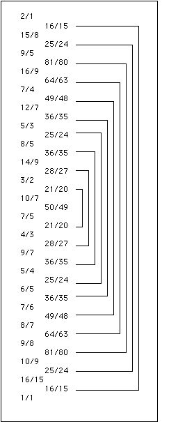

FRETTING ABOUT RATIOS
Since a guitar string produces whole number partials, I wanted to use a tuning which would work with this rather than against it.
Just intonation is the system of tuning which most directly reflects the stucture of the sounds of a vibrating string. There are certain intervals which are highly consonant because of the way the partials of the constituent sounds match up. The most consonant interval is of course the unison (1/1), and after that the octave (2/1). Then comes the perfect fifth (3/2) and the fourth (4/3). These are the only consonances that were recognized by the Greek theorists and they form the basis of their tetrachord system. All the other notes and intervals were considered dissonant to varying degrees, and that is why there are a cornucopia of possible notes within the tetrachord.
All ratios can be thought of as intervals within the harmonic series. Thus 3/2 can be thought of as the interval between the second and third partial, 4/3 as the interval between the third and fourth partial, etc. Thus, the harmonic series, as exhibited by a vibrating string, has encoded within it all possible intervals that can be expressed as ratios of whole numbers. Roughly speaking, the smaller the numbers involved, the more consonant the interval.
Therefore, in choosing a set of ratios within an octave which will make up your vocabulary of tones, you start with the lowest integer ratios and work your way up the series. The question then becomes where to stop and how many of the ratios to include. The more ratios you use, the more sounds you will have at your disposal. However, there are a few things to consider. First, frets can only be so close together before it becomes difficult or impossible to play. Also, there is a limit to what our ears can hear. There's no point in having two different ratios in your scale if, for all practical purposes, they are indistinguishable. So, you can generate a scale using rules, but there comes a point where the reality of execution becomes a limiting factor.
There is a special connection between prime numbers and ratios. All ratios may be reduced to prime numbers. For example 9/8 can be expressed as 3*3/2*2*2. We see that 3 is the largest prime number here, so 9/8 is called a "3-limit ratio". Ratios belonging to the same limit can be thought of as members of a family or species. The familiar 3-limit ratios are 3/2 (fifth), 4/3 (fourth), 9/8 (whole step, also the space between a fifth and a fourth), but of course there are many others (in fact, an infinite number). 5-limit ratios include 5/4 (major third), 8/5 (minor sixth) 6/5 (minor third) and 5/3 (major sixth). These are fundamental intervals of the kind of music that we are accustomed to hearing. With the introduction of 7-limit ratios, we begin to leave familiar waters. These ratios have a sound all their own. This also applies to 11-limit, 13-limit and onwards. However, the major consonances (lowest number ratios) function as such strong basins of attraction that high-prime ratios, if they stray too close, will be heard as mistuned consonances or simply as indistinguishable. So while there are an infinite number of possible ratios, the number of usefully distinguishable ratios is definitly finite.
So, one parameter of choice is what prime limit are you going to use? The other parameter is how "high" are you going to go in the harmonic series. That is, 16/9 is a 3-limit ratio but it is much higher up in the harmonic series than 3/2 or 4/3. I believe that it is the interplay of these two factors: prime limit, and "height" in the harmonic series that influences what we hear as consonance or "color".
If you study the harmonic series (which may also be thought of as the series of integers) it becomes apparent that octaves form the framework. 1/1 - 2/1 - 4/1 - 8/1 - 16/1..etc. Within this framework, the other ratios make their appearance. Thus, the first octave (1/1-2/1) is "empty". The next octave (2/1-4/1), contains 3/2 and 4/3. The next octave (4/1-8/1) introduces 5/4, 6/5, 7/6 , 7/5, 7/4, 8/7, and 8/5. Higher octaves contain more and more new ratios, as well as all the ratios from previous octaves. So it seems natural to group ratios by octave limits. We can speak of all the ratios in the second, third or fourth octave, etc. In addition, ratios within an octave limit can be grouped as to their prime limit as well. We see that up to the fourth octave limit (8/1) there are 3, 5, and 7-limit ratios. The next octave (up to 16/1) introduces 11 and 13 limit ratios.
So we can make a scale of ratios of prime limit "P" and octave limit "O".
A scale where P=5 and O=3 (that is 2^3 = 8/1) would consist of the following ratios:
1/1 6/5 5/4 4/3 3/2 8/5 5/3 2/1
or:
unison, minor third, major third, fourth, fifth, minor sixth, major sixth, octave.
If instead we use P=7 and O=3 we would have:
2/1 -octave
7/4 -septimal or harmonic seventh
5/3 -major sixth
8/5 -minor sixth
3/2 -perfect fifth
7/5 -septimal tritone
4/3 -perfect fourth
5/4 -major third
6/5 -minor third
7/6 -septimal minor third
8/7 -septimal whole tone
1/1 -unison
This is an 11 note scale which I'm sure is quite seviceable, but somewhat limited. There is too big of an empty space between 1/1 and 8/7, and also between 7/4 and 2/1. The major seventh (15/8) is SO incredibly beautiful that I wouldn't want to be without it in my scale. So it seems that I must go beyond P=7 and O=3.
When O=4 (up to 16/1), P can be as high as 13. But this produces too many ratios to be of practical use on a guitar with a 65cm scale length. It turns out that P=7, O=4 produces just the right balance between too many ratios and two few, while including all the tasty ones:
2/1 octave
15/8 classic major seventh
9/5 just minor seventh
16/9 Pythagorean minor seventh
7/4 harmonic seventh
12/7 septimal major sixth
5/3 major sixth
8/5 minor sixth
14/9 septimal minor sixth
3/2 perfect fifth
10/7 Euler's tritone
7/5 septimal tritone
4/3 perfect fourth
9/7 septimal major third
5/4 major third
6/5 minor third
7/6 septimal minor third
8/7 septimal whole tone
9/8 major whole tone
10/9 minor whole tone
16/15 minor diatonic semitone
1/1 unison
Now there is actually one more ratio that comes out of P=7, O=4: and that is 15/14. However, its inversion, 28/15 is outside the O=4 limit and all the other ratios have their inversions within the limit. In addition, 15/14 is only about 8 cents different from 16/15 and can barely be distinguished. Not to mention that the frets for the two ratios would be way too close. For all these reasons, it has been expunged.
Notice that the successive ratios are all superparticular or epimore ratios, widely held since the time of the Greek theorists to be especially nifty.
And speaking of niftyness, notice the symmetry:

So, this is the scale I decided on. Only fretting the guitar and playing around with this scale will prove if it is musically viable. So its time to move from theory to practice.
On to "Putting on the Fretz"